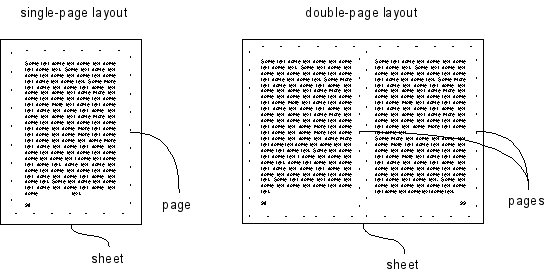
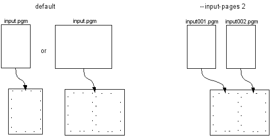
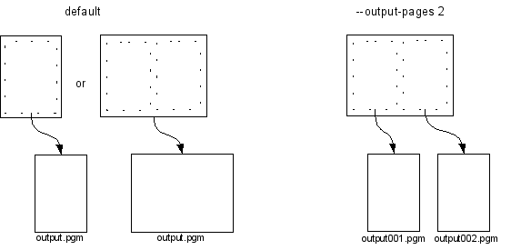
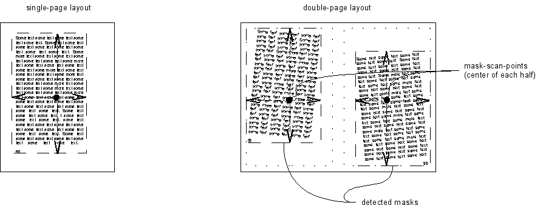
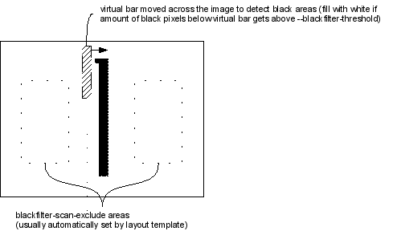
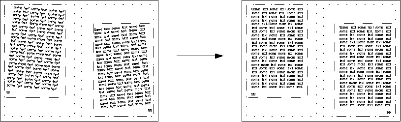
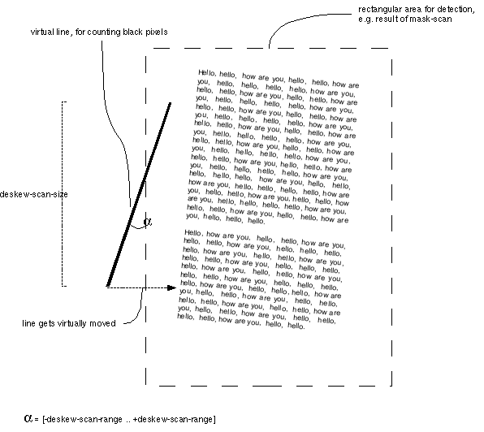
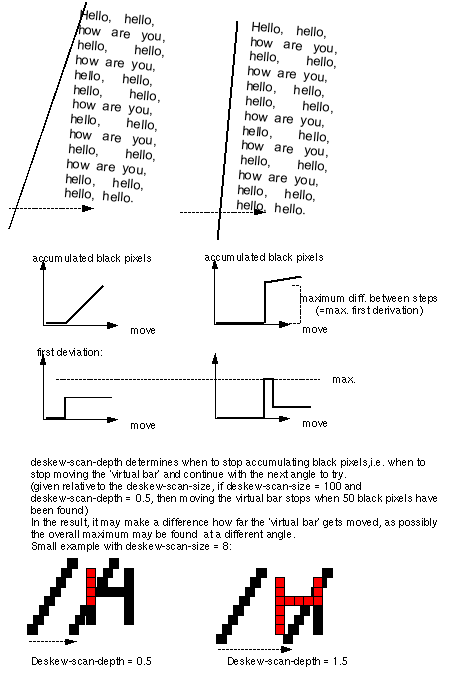

unpaper - User Documentation
This document describes the concepts and features of unpaper.
Table of Contents
Basic Concepts
Sheets and Pages
Input and Output Image Files
Layouts and Templates
Processing Multiple Files
Masks
Borders
Size Values
Image Processing Features
Blackfilter
Noisefilter
Blurfilter
Grayfilter
Deskewing (Auto-Straightening)
Processing Order
The terminology to describe unpaper makes heavy use of the
paper metaphor, because the software is mainly intended for post-processing
scanned images from printed paper documents.
Sheets and Pages
The very basic object unpaper operates on is a sheet.
A sheet is an initially blank image in the computer's memory. Think of a sheet
as an initially empty piece of paper on which something will be printed later.
To do something useful with a sheet, you will at least want to
place one page onto a sheet. A page is a
logical unit of a document which takes up a rectangular area on a sheet.
In the most simple case, one sheet carries exactly one page,
in other cases (e.g. when using a double-page layout) there can be
multiple pages placed on one sheet.

Figure 1: Sheets and Pages
Input and Output Image Files
unpaper
can process either double-page layout scans or individually scanned
pages. It is up to the user's choice whether an image-file
carries a single page or a whole sheet with two pages.
The program can be configured to either join individual image-files
as multiple pages onto one sheet, or split sheets
containing multiple pages into several output image-files
when saving the output.
By default, unpaper places one input image-file onto
a sheet, and saves one output image-file per sheet.
Alternatively, the number of input or output image-files per sheet
can be set to two using the --input-pages 2 or
--output-pages 2 options.
If two image-files
are specified as input, they will successively be placed on the
left-hand half and the right-hand half of the sheet.

Figure 2: Input Files
In the same way, if two image-files
are specified as output, the sheet will be split into two halves
which get saved as individual files.

Figure 3: Output Files
The default value both for --input-pages and --output-pages
is 1.
File Formats
The image-file formats accepted by unpaper are those
of the PNM-family: PBM, PGM and PPM. This
ensures interoperability with
the SANE tools under Linux.
The simplicity of the PNM file-formats also
allows unpaper to be developed as a
pure standalone program without any dependencies on external packages
or libraries, because the PNM file-formats are very easy to handle.
In order to operate on images with a different file-format, several
image file-format converters are available which
can be used to convert to PNM before processing,
and afterwards convert back from PNM to the desired file format. Look
e.g. at pngtopnm / pnmtopng, tifftopnm
/ pnmtotiff, jpegtopnm / pnmtojpeg,
or
consider using the all-purpose image file-type converter convert
from the imagemagick package.
Layouts and Templates
Built-In Layout-Templates
Layouts are the linking concept between physical sheets
and logical pages. A layout determines a set of
rectangular areas at which pages (or other parts of content)
appear on a sheet. The most common and simple layouts
generally used are the single-page layout (one page
covers the whole sheet), and
the double-page layout (two pages are placed on the
left-hand-side and the right-hand-side of the sheet).
unpaper provides basic layout templates for
the above types. There are 2 layout templates
built in, a third one deactivates any template:
- single
- double
- none

Figure 6: Available Layout Templates
A layout template is chosen by using the option --layout,
e.g.
unpaper --layout double input%03d.pbm output%03d.pbm.
Choosing a template with the --layout
option is equivalent to specifying a set of other options, e.g.
setting --mask-scan-point.
In order to combine a template with other options,
make sure that the more specific options appear behind the --layout
option, in order to overwrite the template settings.
The default template is single, use none to deactivate this.
Note: A layout is completely independent from the number
of image-files used as input or output. That means, you can either specify
--layout double together with a single input image-file
(in cases where the input image-file already contains two scanned pages
in a double-page layout), or use it together with an --input-pages
2 setting, in order to join two individually scanned pages
on one sheet.
Complex Layouts
Besides the built-in fixed templates, any kind of complex layout
can be handled by manually specifying either mask-scan-points
using the --mask-scan-point option, or setting masks at
fixed coordinates using the --mask option. Both the --mask-scan-point
and the --mask option may occur any number of times, in order
to declare as many masks in the layout as desired. See below for
a further explanation on masks.
Processing Multiple Files
In many cases, especially when post-processing scanned books, there
will be several input image-files to process in sequence within
a single run of unpaper, and several output image-files to be generated.
Processing of multiple files in a batch job is supported through the
use of wildcards in filenames, e.g.:
unpaper (...options...) input%03d.pbm output%03.pbm
This will successively read
images from files input001.pbm, input002.pbm, input003.pbm
etc., and write output to the files output001.pbm,
output002.pbm, output003.pbm etc., until no more
input image-files with the current index number are available.
Using a wildcard of the form "%0nd" will replace each occurrence
of the wildcard with an increasing index number, by default
starting with 1 and counting up by 1 each time another files gets loaded. n
denotes the number of digits that the replaced number string is
supposed to have, and the 0 requests leading zeros. Thus "%03d"
will get replaced with strings in the sequence 001, 002,
003 etc. This way, a sequence of images named e.g. input001.pgm,
input002.pgm, input003.pgm... can be specified.
There are two seperate index counters for input and output files which
get increased independently from each other.
Wildcards in filenames are also useful when combining a sequence
of individual pages onto double-page layouted sheets,
or when splitting double-page layouted sheets into individual
output files. When using two input or output image-files (by
specifying --input-pages 2 or --output-pages 2) the
index number replaced for the wildcard
will generally not be the same as the sheet number in the
processing sequence, but will grow twice as fast.
The following example will combine
single-page image-files onto a double-page layout sheet:
unpaper -n --input-pages 2 singlepage%03d.pgm output%03d.pgm
This joins the input images singlepage001.pgm and singlepage002.pgm
on output001.pgm, singlepage003.pgm and singlepage004.pgm
on output002.pgm, and so on. Note that due to the use of
option -n (short for --no-processing), the
images are simply copied onto the left-hand half and the right-hand half of the sheet
without any processing regarding layout, mask-detection
etc.
Using
multiple input image-files by setting --input-pages 2
is
independent from any layout possibly specified with the --layout
option. However, in order to use unpaper's post-processing
features for more than simply joining two image-files to one,
you will
most likely want to combine the use of --input-pages 2 with
the --layout double option, as in:
unpaper --layout double --input-pages 2 (...other options...) singlepage%03d.pgm output%03d.pgm

Figure 4: Sequence of multiple input images
Similarly, it is also possible to split up a sheet into
several image-files when saving. The following line would be
used to split up a sequence of double-page layouted sheets into a sequence of
single-page output images, including full image processing (applying masking,
deskewing, border-aligning etc., see below) in
order to make sure that the pages in the double-page layout
are really placed fully on the left-hand half and the right-hand half of the sheet
before the sheet gets split up:
unpaper --layout double (...options...) --output-pages 2 doublepage%03d.pgm singlepage%03d.pgm

Figure 5: Sequence of multiple output images
By default, processing of multiple sheets starts with sheet
number 1, and also with input and output image-files number
1. unpaper will run as long as input image-files with the current index
number can be found. If no more input files are available, processing stops.
Adjusting Indices
In order to start with a different sheet index, the --start-sheet
option can be set. Likewise, setting --end-sheet
specifies a fix sheet number that will the last one
processed, even if more input-files are available.
Using --sheet, a single sheet or a set of specific
sheet numbers to be processed can be specified. For example:
unpaper --sheet 7,12-15,31 --input-pages 2 (...options...) input%03d.pgm output%03d.pgm
This would generate the output-files output007.pgm, output012.pgm,
output013.pgm, output014.pgm, output015.pgm
and output031.pgm, reading input from the same files as if a
whole sequence of sheets and pages starting with index 1 had been
processed, i.e. reading the files input013.pgm and input014.pgm
for sheet 7, input023.pgm and input024.pgm
for sheet 12, and so on.
To prevent some sheets from being processed (i.e., remove them
from the sequence), the option --exclude
can be used. Note that this is different from option --no-processing
or -n, which still would generate the output files but
without applying any image processing to them.
The input and output index numbers to start with can be adjusted using
the options --start-input and --start-output.
These values apply to the wildcard replacement in filenames only and
are independent from the sheet numbering. In other words,
setting these options specifies an offset at which the file numbering starts relative
to sheet 1. For example:
unpaper --input-pages 2 (...options...) --start-input 7 input%03d.pgm output%03d.pgm
These settings would cause the input-files input007.pgm and input008.pgm
to be used for sheet 1, input009.pgm and input010.pgm
for sheet 2, and so on. The default value for both options is 1.
File-Sequence Patterns
More sophisticated file-sequence patterns can be
specified using the --input-file-sequence
or --output-file-sequence options. In cases where the
input files are named after a pattern like e.g. left01.pbm, right01.pbm,
left02.pbm, right02.pbm etc., the use of --input-pages 2 together with --input-file-sequence left%02d.pbm right%02d.pbm
will load to the desired images. The index counter with which the
wildcards in the filenames get replaced is increased every time the
file-sequence pattern is iterated through, it will not be
increased after each single replacement of a wildcard.
Note that it would also be possible to use
file-sequence patterns of
different lengths than the number of pages per sheet.
In case an input file-sequence like e.g. a%d.pbm b%d.pbm c%d.pbm
is specified together with --input-pages
2, the input image-files used for the first sheet
would be a1.pbm
and b1.pbm, the input image-files used for the second
sheet would be c1.pbm
and a2.pbm (!), for the third sheet they would be b2.pbm
and c2.pbm, and so on. It's up to the user whether it makes sense to use
file-sequence patterns of different length than the corresponding number of
input image-files or output image-files per sheet.
Specifying a filename as the very last argument on the command-line is
equivalent to using --output-file-sequence <file>
(a sequence of length 1), specifying a filename as the last-but-one
argument on the command line is equivalent to using --input-file-sequence
<file>.
Inserting Blank Content
Input file-sequences may be forced to use completely blank images at
some index positions. The --insert-blank option allows to specify one or more input
indices at which no file is read, but instead a blank image is inserted
into the sequence of input images. The input image that would have been
loaded at this index position in the sequence will be used at the
following non-blank index posisiton instead, thus the following indices
get shifted to make room for the blank image inserted.
The --replace-blank option also allows to insert blank
images into the sequence, but it suppresses the images that would have
been loaded at the specified index positions and ignores them. No
index positions get shifted to make room for the blank image.
Masks
Masks are rectangular areas on a sheet that are
affected by several of the processing steps unpaper performs.
Although there may be as many masks
on a sheet as desired, in most cases it will be useful to
operate with either one or two masks per sheet only. A
single-page layout would operate on only one mask covering the whole
page, a double-page layout would make use of two masks, one placed
somewhere in the left-hand half of a sheet, the other somewhere in the
right-hand half.
Automatic Mask-Detection
Masks can be set directly by specifying pixel coordinates
using the --mask option, but in most cases it is desirable to
detect masks automatically. Automatic mask-detection
allows input images to contain content which is not perfectly placed at fix
areas, but probably differs slightly in position from sheet to sheet
(which is usually the case when books are scanned or photocopied manually).
Automatic mask-detection uses a starting point somewhere on the
sheet called mask-scan-point, which marks a
position estimated to be somewhere inside the mask to be detected. (When detecting
masks that cover a whole page, it is useful to place the mask-scan-point
right in the center of the sheet's half on which the page
appears.) Beginning from the mask-scan-point, the image content is
virtually scanned in either the two horizontal directions (left and
right), or the two vertical directions (up and down), or all four directions, until no
more dark pixels are found which means an edge of the mask is
considered to have been found.

Figure 7: Mask-Detection
Several parameters control the process of mask-detection. At
first, mask-scan-points to start detection at get specified
either using the --layout
option (which automatically sets one mask-scan-point for single-page
layouts, and two mask-scan-points for double-page layouts)
or manually with the option --mask-scan-point.
Mask-detection is performed by the use of a 'virtual bar' which
covers an area of the sheet under which the number of dark pixels is
counted.
The 'virtual bar' is moved towards the directions
specified by --mask-scan-direction.
(Those directions not given via --mask-scan-direction will
use up the whole sheet's size in these directions for the
detected result.)
While moving the 'virtual bar' the number of
dark pixels below it is continually compared to the number that has
been counted at the very first position of the 'virtual bar' above the mask-scan-point
when detection started. Once the number of dark pixels drops below the
relative value given by --mask-scan-threshold,
mask-detection stops and an edge of the mask is
considered to have been found.

Figure 8: 'Virtual Bar' for Mask-Detection
The width of the 'virtual bar' can be configured using the --mask-scan-size
option, the length of it by setting --mask-scan-depth.
Adjusting the 'virtual bar's' width can help to fine-tune the process
of mask detection according to the content that is being scanned. The
wider the 'virtual bar' is, the more tolerant the detection process
becomes with respect to small gaps in the content (which is e.g. needed
if a page is made up of multiple columns). However, if the
'virtual bar' is too wide, detection might not stop properly when a
mask's edge should have been found.

Figure 9: Mask-Scan-Threshold
Mask-detection can be disabled using the --no-mask-scan
option, optionally followed by the sheet numbers to disable the filter
for.
Mask-Centering
Masks that have been automatically detected or manually set will
be used for several
further processing steps. At first they provide the basis
for properly centering the content on the corresponding page
area on the sheet.
This allows unpaper to automatically
correct imprecise positions of page content in scanned sheets
and shift the content to a normalized position. Especially
when processing multiple pages, this leads to more regular
positions of pages in the sequence of resulting sheets.

Figure 10: Mask-Centering
Mask-centering can be suppressed using --no-mask-center,
optionally followed by the sheet numbers to disable the filter for.
Borders
Unlike masks, borders are detected by starting
at the outer edges of the sheet
(or left/right halfs of the sheet, in a double-page layout),
and then scanning towards the middle until
some content-pixels are reached. Again, a 'virtual bar' is used for
detection, the width of which can be set using the option --border-scan-size,
and the step-distance with which to move it by setting the option
--border-scan-step. The option
--border-scan-threshold determines the maximum absolute
number of pixels which are tolerated to be found below the 'virtual
bar' until border-detection stops and one edge of the border
area is considered to have been found.

Figure 11: Border-Detection
Border-Aligning
Borders serve two different purposes: First, the area outside
the detected border on the sheet will be wiped out, which
is another mechanism to clean the outer sheet boundary from unwanted
pixels.
Second, a detected border can optionally be aligned towards one edge of
the sheet. Border-aligning means shifting the area
inside the border towards one edge of the sheet.
The edge towards which to shift the border is specified with the
option --border-align.
Additionally, a fixed distance from the edge is
kept, which can be set via --border-margin.
This way, it can be assured that e.g. all pages of a scanned
book regularly start 2 cm below the upper sheet edge.

Figure 12: Border-Aligning
Note that border-aligning is not performed by default, it needs
to be explicitly activated by setting the option --border-align to
one of the edge names top, bottom, left
or right, and by setting --border-margin to the
desired distance which is to be kept to this edge.
Use --no-border-scan to disable border-detection,
or --no-border-align
to prevent border-aligning on specific sheets, both
optionally followed by
the sheet numbers to disable the filters for.
Size Values
Whenever an option expects a size value, there are three
possible ways to specify that:
- as absolute pixel values, e.g. --sheet-size 4000,3000
- as length measurements on one of the scales cm, mm,
in, e.g. --size 30cm,20cm or also --size
10in,250mm
- using one of the following size names:
- a5
- a4
- a3
- letter
- legal
- a5-landscape (horizontally oriented A5)
- a4-landscape (horizontally oriented A4)
- a3-landscape (horizontally oriented A3)
- letter-landscape (horizontally oriented letter)
- legal-landscape (horizontally oriented legal)
Examples: --sheet-size a4, --post-zoom letter-landscape
Using one of the last two ways, length measurements get internally
converted to absolute pixel values based on the resolution set via
the option --dpi. If the default of 300 DPI should be
changed, this option must appear on the command line before
using a length measurement value. --dpi may also appear
multiple times, e.g. if the size values of the output image(s)
should be based on a different resolution than those of the input file(s).
Note that using the --dpi option will have no effect on the
resolution of the image-files that get written as output. (The PNM format is not
capable of storing information about the image resolution.) The value
set via --dpi will only have effect on unpaper's internal conversion of
length measurements to absolute pixel values when size values are specified using
length measurements or size names.
Image Processing Features
Blackfilter
Sometimes it is desirable to automatically remove large black areas
which originate from bad photocopies or other optical influences. The blackfilter
can help to find large areas of black and wipe them out automatically.

Figure 13: Blackfilter
Be careful with pictures in scanned documents, especially
with diagrams. Some diagrams intentionally contain large areas of dark
color, which might be affected by automatic wipe-out of the
blackfilter. In order to prevent actual page content
from being wiped out, the option --blackfilter-scan-exclude
allows to specify areas on the sheet which should not be taken
into account by the blackfilter. When using one of the default layout
templates set via the --layout
option, the inner area of each page will automatically be
excluded from black-filtering.

Figure 14: Blackfilter Details
The blackfilter can be disabled by the option --no-blackfilter,
optionally followed by the sheet numbers to disable the filter
for.
Noisefilter
The noisefilter removes small clusters of pixels
("noise") from the sheet.
The maximum pixel-size of clusters to be removed can be set via --noisefilter-intensity.
This value must not be chosen too high in order not to remove relevant
elements of page content, e.g. normal text-points ("."). As a
consequence, this option might have to be adjusted on images with a low
scan resolution.

Figure 15: Noisefilter
Disable with --no-noisefilter, optionally followed by
the sheet numbers to disable the filter for.
Blurfilter
The blurfilter removes "lonely" clusters of pixels, i.e.
clusters which have only very few other dark pixels in their neighborhood.

Figure 16: Blurfilter
The size of the neighborhood to be searched and the amount of other dark
pixels accepted in the neighborhood below which the area gets wiped out
can be adjusted with the options --blurfilter-size,
--blurfilter-step and --blurfilter-intensity.
Additionally, --blurfilter-step also determines the step-size
with which the neighborhood-area is moved across the image while filtering.

Figure 17: Blurfilter Details
Disable with --no-blurfilter, optionally followed by
the sheet numbers to disable the filter for.
Grayfilter
The grayfilter removes areas which are gray-only, that
means it wipes
out all those areas which do not contain a maximum relative amount of
non-dark pixels. The size of the local area the
grayfilter operates on can be set using --grayfilter-size,
and the granularity of detection is controlled via --grayfiter-step.
The maximum relative amount of non-dark pixels that are still
considered to be deletable can be set using --grayfilter-threshold.
Be careful with the grayfilter when processing color scans,
because any bright color might be considered as gray and be wiped out. It might be a good
idea to disable the grayfilter when processing color scans.
Disable with --no-grayfilter, optionally followed by
the sheet numbers to disable the filter for.
Deskewing (Auto-Straightening)
The deskewing performed by unpaper is actually a
rotation to automatically straighten rectangular content areas on the sheet.
It is applied to any mask that has been found during mask-detection
or that has been set directly via the --mask option.

Figure 18: Deskewing
The algorithm that detects the angle of skew works
better the more regular and solid the edges of the area's content are.
It works as follows:
A 'virtual line' is moved from the outside of one edge inside the
rectangular area. This happens several times, gradually changing the
rotation of the 'virtual line'. (Called 'virtual', because there is of
course no visible line drawn in the image.) The algorithm will count
the number of dark pixels along the line as it is virtually moved.
Some parameters control the the size of the 'virtual line' and its
movement:
--deskew-scan-size: the height/width of the 'virtual
line' used for scanning (the length of the line at rotation angle 0)
--deskew-scan-range: the absolute value of degrees
between the negative and positive value of which the line will be
rotated (i.e., the default value 5.0 will cause the 'virtual line' to
be rotated in several small steps between -5.0 degrees and 5.0 degrees).
--deskew-scan-step: the step size with which to iterate
between the bounds set by --deskew-scan-range (I.e., a value
of 0.1 will lead to the virtual line being successively rotated with
0.0, 0.1, -0.1, 0.2, -0.2, 0.3, -0.3 ... degrees.)

Figure 19: Rotation Detection
At each of these rotation steps, the following is done:
The rotated 'virtual line' gets moved (again 'moved virtually') towards
the center of the rectangular area on which detection gets performed.
Movement is performed pixel by pixel, it starts with the line
completely outside the rectangular area, not yet reaching inside the
area. At each movement-step, the number of dark pixels covered by the
virtual line is counted and is accumulated as the total sum of dark
pixels. For each rotation angle at which this is done, the maximum
difference in the accumulated sum of dark pixels occurring between a
previous movement-step and the next one gets calculated. The rotation
angle for which this maximum difference becomes maximal will be the rotation
angle detected for deskewing.
The relative amount of dark pixels to accumulate before shifting the 'virtual line' is stopped (and
continued with the next rotation-step) is given by --deskew-scan-depth.
This value is relative to the number of pixels that the 'virtual line' covers in total, i.e.
for the default deskew-scan-size of 1500 and the default deskew-scan-depth
of 0.66, shifting at each rotation step stops after 1000 dark pixels
have been counted in sum (or, if not enough pixels are met, when the
'virtual line' has reached the center of the rectangular area).
Sometimes, trying out different deskew-scan-depth values, either lower
than the default of 0.66, or higher, can noticeably increase
detection quality. Which value is best is merely coincidental,
depending on the shape of the outer edges of each very first character
in each line of a text area.

Figure 20: Rotation Detection Details
The above described the detection process starting at one single edge
of a 4-edged rectangular area (e.g. the left edge, as displayed in the above image).
However, the overall rotation angle detection uses results of up to all
four edges. Which edges to use can be specified by --deskew-scan-direction.
The final rotation angle will then be the average value of all rotation
angles detected at each edge. Usually, the individually detected values
can be expected to be almost the same at each edge, if the rectangular
area to be deskewed has a regular shape. If, however,
the individual values differ too much, it can be concluded that
something went wrong with the detection, and no deskewing
should be performed. (E.g., if the
rotation at the left edge appears to be -0.5 degrees, but at the right
edge results in 1.9 degrees, one should better not use the average value,
because with that big difference something seems to have gone wrong with the
detection.)
So, before using the average of all individually detected values, their
statistical standard-deviation is calculated, which is .
If the standard-deviation among the detected angles exceeds the value
specified by --deskew-scan-deviation, the total result
is considered to be wrong and no deskewing is
performed.
Deskewing can be disabled with --no-deskew,
optionally followed by the sheet numbers to disable it for.
Processing Order
Processing of the filters and auto-corrections is performed in a fixed
order according to the following sequence:
- load image file(s)
- perform pre-rotate, pre-mirror etc. actions on
the individual input files (if specified)
- place on the sheet (multiple input-files are
placed as tiles), auto-determine sheet size by the size of the
input image-file(s) if
not specified explicitly
- apply noisefilter and blurfilter to remove small
bits of unwanted pixels
- apply blackfilter and grayfilter to remove larger
areas of unwanted pixels
- detect masks starting from specified mask-scan-points
- perform deskewing on each detected or directly specified
mask
- re-detect masks again to get precise masks after deskewing
- center masks on the corresponding page's area on the sheet
- perform border-detection
- align the detected borders
- save output image file(s), possibly perform post-rotate,
post-mirror etc. actions on the individual output files
before saving

Figure 21: Processing Order
Disabling processing steps
Each processing step can be disabled individually by
a corresponding --no-xxx option (where xxx
stands for the feature to disable, e.g. --no-grayfilter, --no-mask-scan
etc.).
If such an option is followed by a sheet number, or a comma-seperated list
of multiple sheet numbers, the filter gets disabled only for those sheets
specified. Otherwise (if no sheet number follows), the filter is
disabled for all sheets. Instead of specifying individual sheet
numbers, also a range of numbers can be given, e.g. "10-20" to represent all
sheet numbers between 10 and 20. Example:
unpaper (...options...) --no-blackfilter 3,15,21-28,40 (...)
This will disable the blackfilter on the sheets 3, 15,
21, 22, 23, etc. until 28, and 40.
Written by Jens Gulden 2006-2007
Modifications under the GPL are welcome.